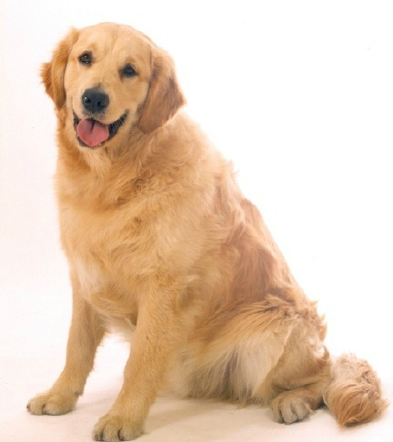
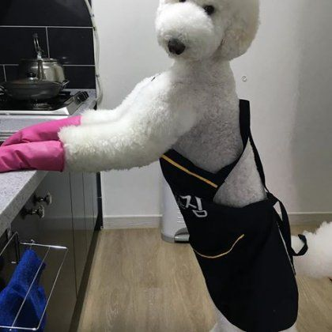

★대형견★
가정에서 기르기 좋은 애완견을 소개해드리겠습니다!
가정에서 키우기 좋은 강아지(대형) TOP 3
●골든 리트리버(크림, 골드)
주인에 대한 복종도가 높고, 학습능력 또한 높기 때문에 훈련이 어려운 견종은 아니다. 오히려 함께 할 수 있기를 원하는 견종이기 때문에 훈련성과도 좋은 강아지로 알려져 있다. 또한 골든 리트리버는 비만이 되기 쉬운 견종이므로 젊었을 때 제대로 운동하고 근육과 골격을 발달을 촉진하는 것이 중요하다.
- 특징：
- 맹인 특수 안내견으로 많이 활동함.
- 성격：
- 친화력이 뛰어나며, 온화한 성품을 갖고 있다.
●스탠다드 푸들(갈색, 블랙, 크림색, 초코, 화이트, 실버)
아름답고 우아한 모습의 스탠다드 푸들이지만, 원래 리트리버(사냥개)로 활약하고 있었기 때문에 좋은 체력과 뛰어난 운동신경을 가지고 있습니다. 운동량의 부족은 스트레스가 생기게 하여 강아지로 하여금 심한장난으로 주인을 당황하게 할 수 있습니다. 별로 짖지않는 견종이지만, 심하게 짖는 것이 버릇이 될 수도 있습니다.
- 특징：
- 큰 덩치, 부유한 솜털 곱슬끼, 위로 향한 꼬리
- 성격：
- 영리하고, 부드러운 성격
●래브라도 리트리버(밝은 갈색, 황갈색, 블랙, 화이트, 크림）
래브라도 리트리버의 수명은 10년 정도인데, 다른 강아지에 비해 다소 짧은 편이다. 사람을 돕는 일을 하는 경우 그 수명은 더욱 짧다. 일을 많이 하면서 스트레스를 받기 때문이다. 혹시라도 길에서 사람을 돕고 있는 래브라도 리트리버를 보면 그냥 무심히 지나쳐 주는 것이 좋다.
- 특징：
- 쳐진 귀
- 성격：
- '천사견' 이라는 별명답게 친절하고 따뜻한 성격을 가짐.